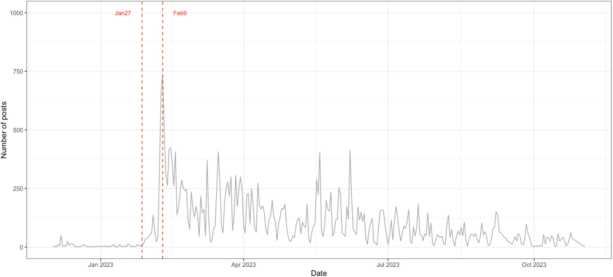
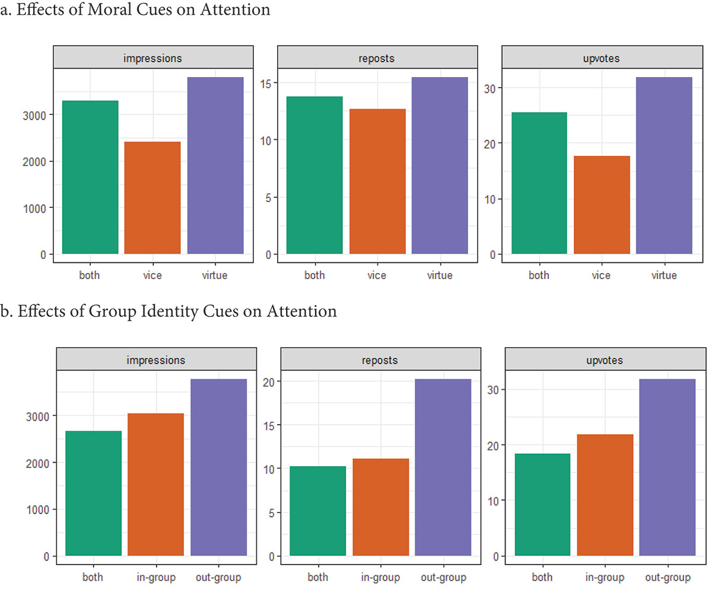
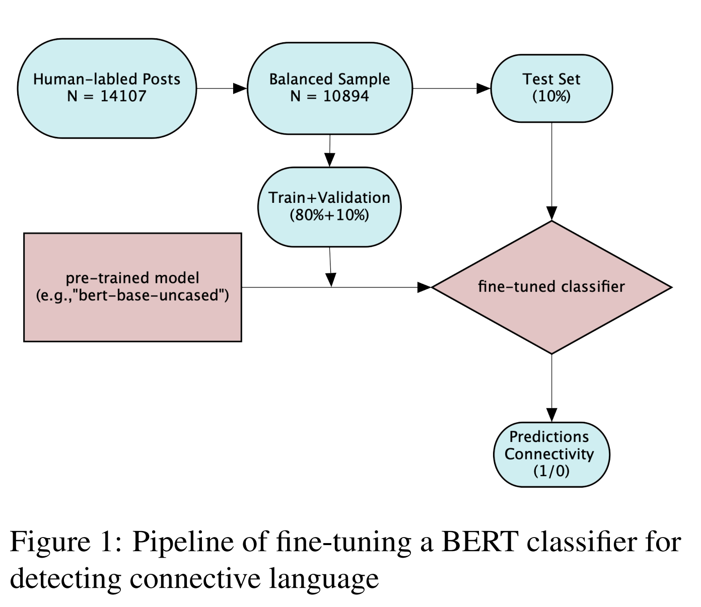
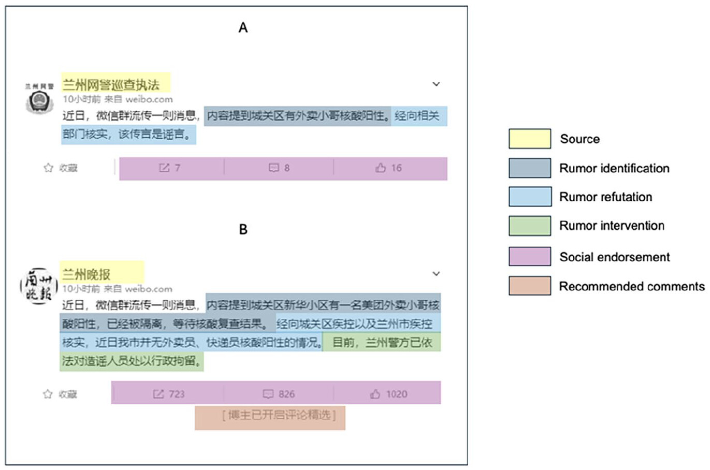
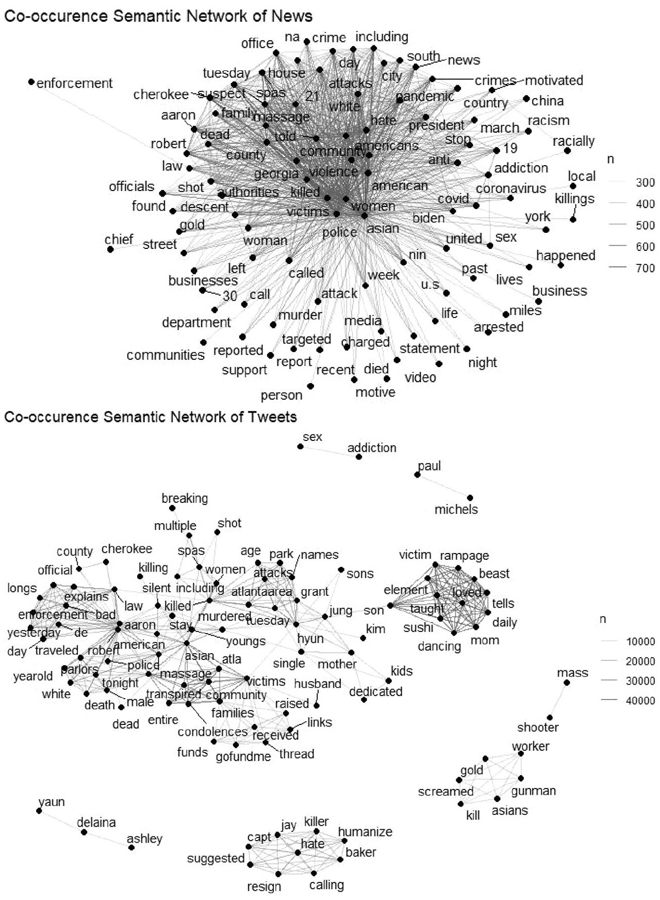
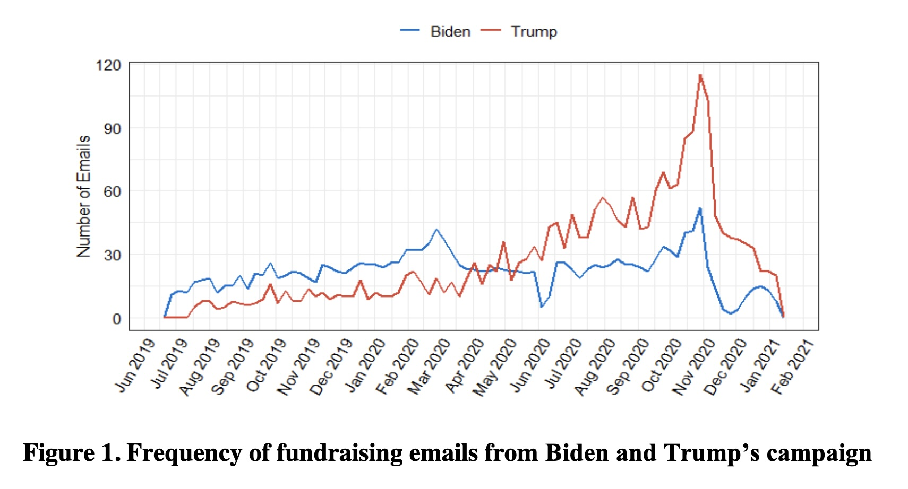
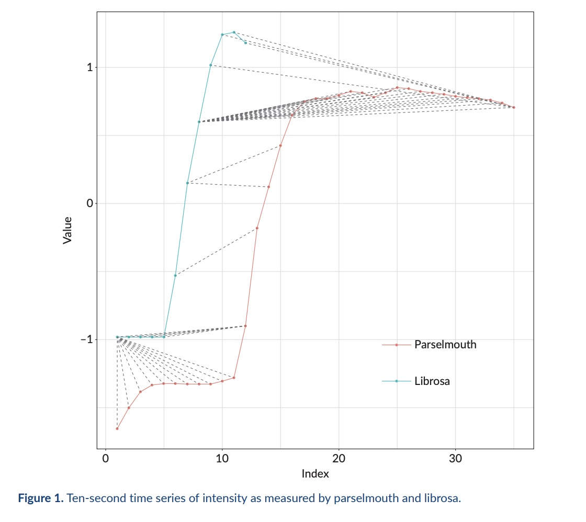
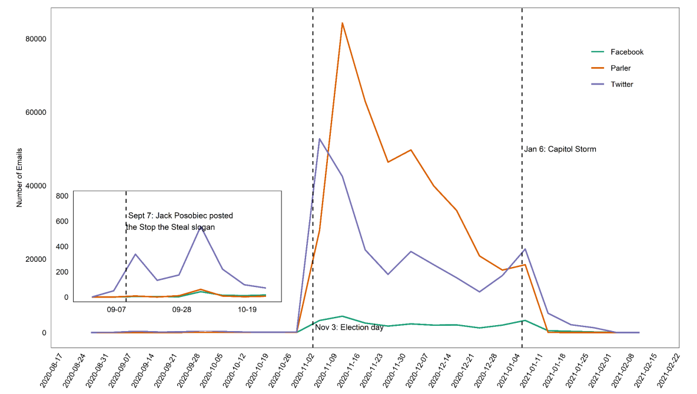
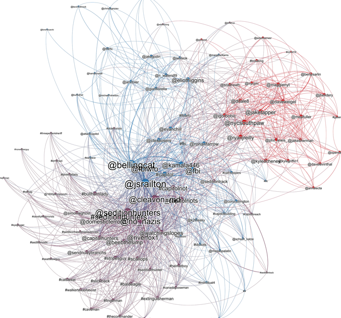
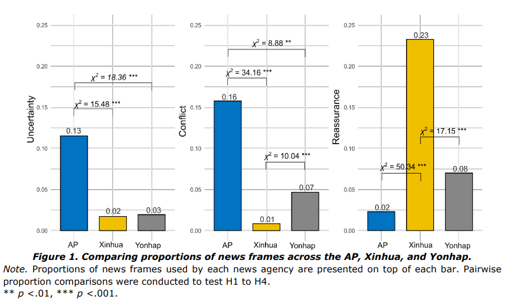

Assistant Professor
University of Hong KongHi! I am an Assistant Professor at the School of Future Media, the University of Hong Kong. My research explores digital platforms and politics, AI and media studies, computational social science, and comparative communication studies. Before joining HKU, I received my Ph.D. in Journalism and Media and M.S. in Statistics and Data Science from the University of Texas at Austin.
Hiring Research Assistants — I’m looking for RAs in Computational Social Science. Strong skills in statistics and programming (Python or R) are required. If you’re interested, please email me your CV.
PhD Applicants — Please refer to the SFM’s official guidelines, and apply directly through HKU’s official application portal. 如在其他平台（如小红书）看到关于我招生的信息，请注意那并非本人发布。各平台中介请勿未经授权转载本页内容。有意向的同学欢迎直接发邮件联系我获取准确信息。

DJ
JITP
EMNLP
IJPP
SMS
JQD
MAC
SMS
JOC
IJOCMy open-source textbook, Data Journalism with R, is available online. It’s a work in progress and constantly evolving — if you have any comments, suggestions, feel free to drop me an email.
Last update: April 19, 2026